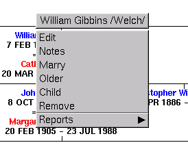
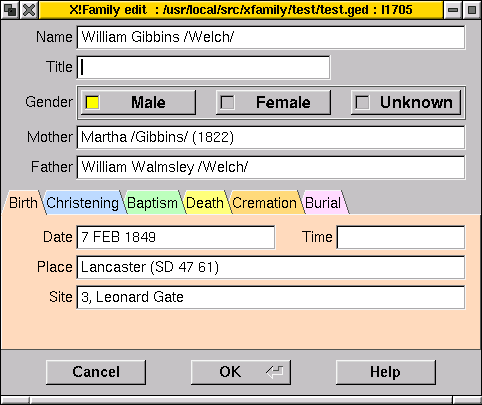
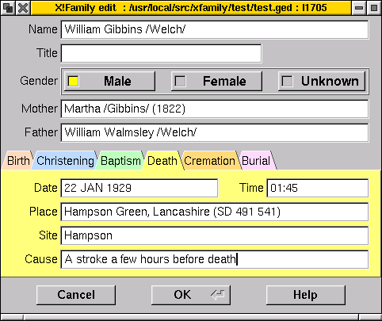

Next | Prev | Table of Contents
Right clicking on a person in the main window brings up a menu:

Choosing "Edit" or "Child" from this menu (or "Child" from the marriage pop-up menu) will open a tabbed dbox in which details of a person's main life events can be entered. The same dbox is opened from the "New..." item on the "People" drop-down menu on the main window.
From the point of view of a genealogist, often doing research in civil vital records or church records, the main events in a life are birth, marriage and death. Of these, marriage affects two people and is not an event of a single life. Birth and death are associated (and may only be recorded as) christenings, baptisms, cremations and burials, and these are the six events currently handled by this dbox. GEDCOM has established tags for a whole host of other life events, and a generic "event" tag for anything else occurring to a person's life on a specific date. X!Family preserves this information in your GEDCOM, but doesn't currently support displaying or editing it.
The first two text fields are Name and Title, which identify this person. Title is optional, and is typically an indication of civil or military rank, usually the final rank achieved during life.

[ In RISC OS !Family version 2.26, a single check box "Living" can be set to show that a person is believed to be alive on the date the database is being edited. Strictly speaking the tag used to record this is not a part of the GEDCOM standard, but seems to be widely used by a number of genealogy packages. This feature is implemented in X!Family, but if some indication is present that death has occurred (a date or other detail is set for Death, Burial or Cremation) then the "Living" checkbox will not appear in the interface. If a proper way of indicating this status is defined in some future version of GEDCOM, this part of the user-interface may change to reflect this. ]
A line of three radio buttons defines the gender of this person as male, female or unknown.
Two text fields give the names of the parents. Filling in these fields enables the person to be placed correctly in the structure of the family tree. If the parents are already in the database, they must be spelt exactly as they already appear in order to connect the new person correctly. If the dbox was opened as a result of choosing "Child" in a person or family pop-up menu, then they should already be filled in correctly. Getting the spelling wrong here would result in the creation of new people in the database, and it might possibly be some time before the error became apparent. To avoid this when the dbox is opened without these names filled in, name completion is available via the three buttons to the right of each name. These enable you to type in a partial name, and then look for matches in the database, filling in blanks to the left, to the right, or both ways to create a list of possible people already in the database, from which you can choose. This mechanism will also, eventually, enable you to distinguish two people in the database with identical names, which can currently cause problems.
Below these fields are the six tabs for events. Clicking on a tab brings it to the front, so that the fields may be filled in. In all cases, these fields include a date and time, a place (down to the level of town or village) and a site (down to the level of street, building or burial ground, for example). The division between "place" and "site" is somewhat arbitrary, and in the most recent version of GEDCOM, seems to have been abolished entirely in favour of a more structured form of the "place" specifier. It is intended to change the way in which X!Family saves these fields to fit in with the newer usage, whilst still retaining the ability to read the old forms.
The "Death" and "Burial" tabs each have one additional field. Death can have a "Cause", typically that recorded on a death certificate for modern deaths. "Burial" can be specified down to the level of "Plot". Again, in versions 5.4 and 5.5 of GEDCOM, this detail has been subsumed into the "Place" tag, but X!Family will continue to be able to read the "SITE", "CEME" and "PLOT" tags specified in GEDCOM 5.3.

Finally there are three buttons "Help" (which should bring you to this help page), "Cancel" and "OK". "Cancel" throws away any changes you have made and closes the dbox (clicking on its "close" icon will do likewise). If the dbox was opened from "Child" or "New..." menu items to create a new person in the database, then that person is not created. If the dbox was opened from "Edit", then the person continues to exist unchanged in the database.
Clicking "OK" saves the changes, creating a new person in the database if necessary. Note that if you have changed the names of one or both parents, the person may also be moved about the structure, and potentially, new database entries may be created for those parents. This feature is useful when entering a database following research further back into the past. Editing a person to add parents' names creates those parents, who in turn may be edited to add their parents, and so on, as far back as your research goes.
Next | Prev | Table of Contents